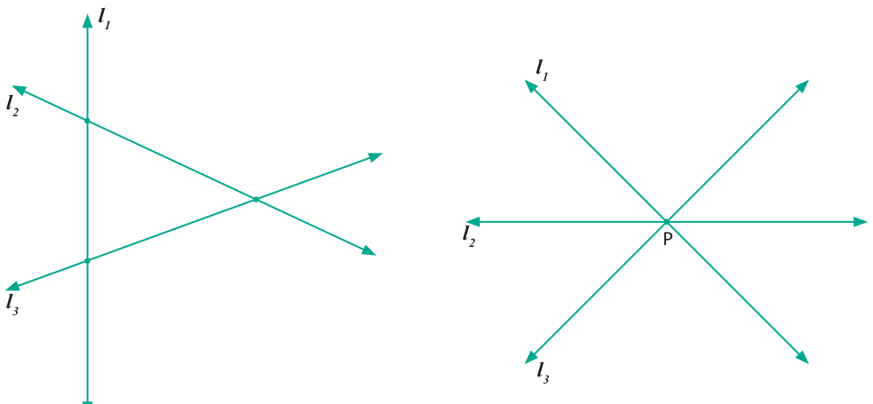
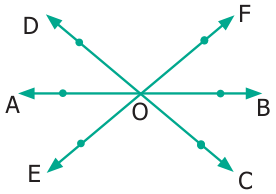
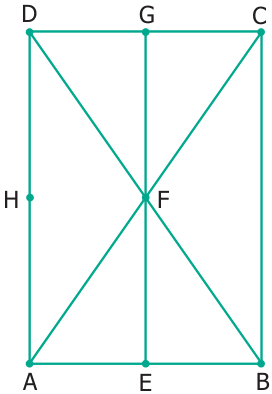
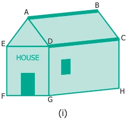
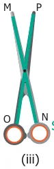
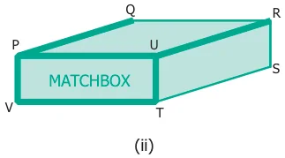
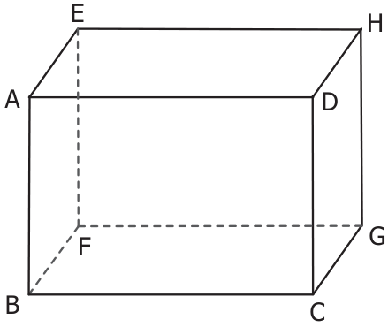
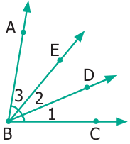

Activity
A book is an object where you can see parallel, perpendicular and intersecting lines.
Suggest atleast 2 more examples having parallel, perpendicular and intersecting lines.
Two intersecting lines cut at a point. Will three lines intersect at one point? Fig.4.32 will help you to answer this.

When many lines intersect at a single point, that is again special, we call that point P as a point of concurrency. The lines are called concurrent lines.
- Observe the diagram and fill in the blanks.

- 'A', 'O' and 'B' are _________ points.
- 'A', 'O' and 'C' are _________ points.
- 'A', 'B' and 'C' are _________ points.
- _________ is the point of concurrency.
- Draw any line and mark any 3 points that are collinear.

- Draw any line and mark any 4 points that are not collinear.
- Draw any 3 lines to have a point of concurrency.
- Draw any 3 lines that are not concurrent. Find the number of points of intersection.
Objective Type Questions

- A set of collinear points in the figure are _________.
(a) A, B, C (b) A, F, C (c) B, C, D (d) A, C, D - A set of non-collinear points in the figure are _________.
(a) A, F, C (b) B, F, D (c) E, F, G (d) A, D, C - A point of concurrency in the figure is _________.
(a) E (b) F (c) G (d) H
Miscellaneous Practice Problems
- Find the type of lines marked in thick lines (Parallel, intersecting or perpendicular).



- Find the parallel and intersecting line segments in the picture given below.

- Name the following angles as shown in the figure.
- \(\angle 1 =\)
- \(\angle 2 =\)
- \(\angle 3 =\)

- \(\angle 1 + \angle 2 =\)
- \(\angle 2 + \angle 3 =\)
- \(\angle 1 + \angle 2 + \angle 3 =\)